Every item raised in this round, what caused it, and the measurement that shows it
is closed. All figures are read out of the running game by an automated pass over
all four levels — not from a single manual playthrough. Every item has a screenshot taken
from the live build.
How to read the screenshots. A cursor is invisible to a screen capture, so most shots carry
a hit-test overlay: the game is probed at 8 040 points and each one is tinted by the cursor the
browser would actually show there — red where a hand
appears, green where the arrow stays.
A correct screen is green everywhere except the one control the learner is meant to press. The dark
band across the top of each shot is measured live from that same screen, not typed in by hand.
Automated suites — final run against the shipped build
Suite
What it checks
Pass
Fail
Skip
Cursor probe
Pointer cursor across 5 screens, 8 040 sampled points
all
0
0
Wrong-answer sequencing
Lock, shake, then reveal on the block stage
44
0
0
Error-state lock-out
Both wrong-answer states, all levels
74
0
2
Button states + SFX
Tap sound, bump, press, switched-off
49
0
0
Locked-state invariant
11 wired controls × 4 levels
36
0
0
Hover
Hover shade, scoping, guards
11
0
0
Locked-card tap
15 visual properties × 3 taps
28
0
0
Idle nudge
Threshold, hand, deepened pulse, stop-on-press
36
0
0
Title voice-over
Requested on load, scenery taps silent, Let's Go still stops it
9
0
0
Title-line button
Exists, pressable, hover and press states, one start per press
18
0
0
Tap during the retry window
A tap mid-retry starts nothing
4
0
0
Tap after the retry window
A later tap starts nothing either
4
0
0
Boot smoke
All 4 levels start, console clean
all
0
0
The ten items, in the order they were raised
#
Item
Status
Headline evidence
1
Pointer cursor over non-interactive welcome-screen areas
Closed
100.0% → 6.7% of surface
2
Title voice-over re-plays and overlaps on background tap
Closed
10 taps → 0 triggers
3
Pointer stays on option cards after a wrong answer
Closed
pointer → default, 4/4 levels
4
Next button looks flat; no tap sound anywhere
Closed
9 buttons × 4 levels, 1 sound each
5
Buttons need a pressed state and no shine or white flash
Closed
travel 0 → 8px, flash = 0
6
Try again appears out of nowhere on the block stage
Closed
0ms → 660ms, after the shake
7
Pointer stays on option cards on the success screen
Closed
16 failures → 0
8
No colour change when hovering Next, or any button
Closed
brightness 1.0 → 0.93
9
Tapping a locked card flashes a blue highlight
Closed
15 properties, zero change
10
Nothing nudges the learner toward Next when idle
Visual done · audio blocked
hand at 4 340ms
Every screen in the game, measured
Before the individual items, here is the whole
journey with the cursor overlay on each screen. The rule being checked is the same everywhere:
green across the scenery, red only on what the learner is meant to press. These are the
screens QA's own repro steps start from.
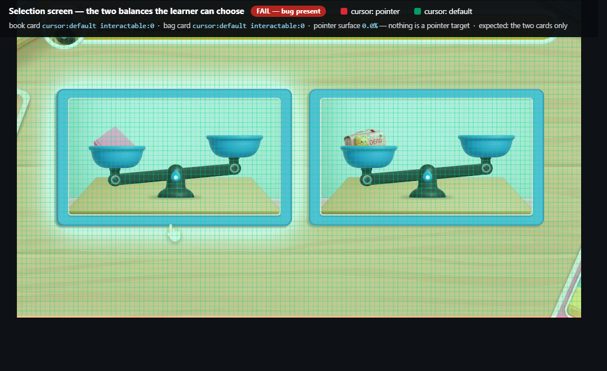
1 · Selection. “Select a balance.” Both cards live; nothing else is a
pointer target.
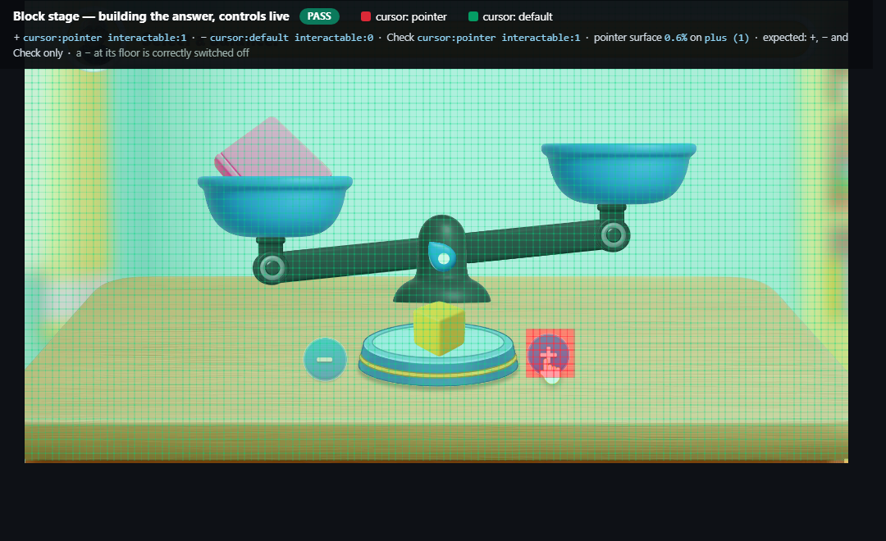
2 · Building the answer.+ live, − correctly
switched off with the count at its floor — the light/dark states doing their job.
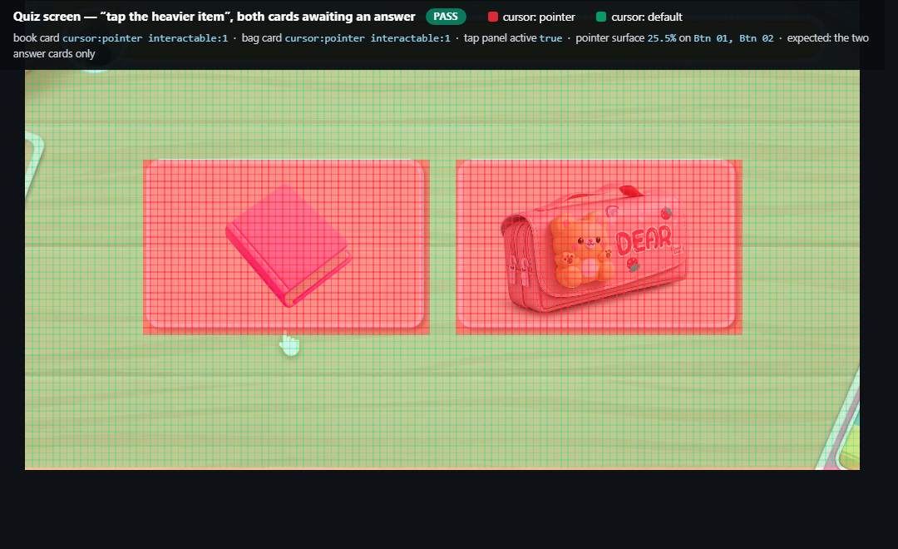
3 · The quiz. “Tap the heavier item.” Both answer cards live —
cursor:pointer interactable:1. This is the screen QA's steps begin on.
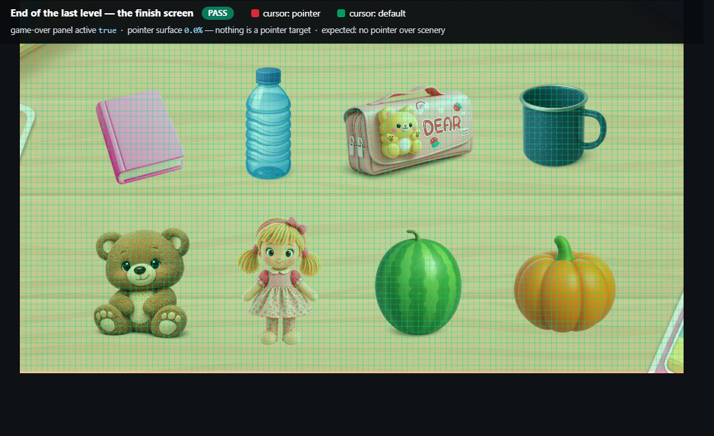
4 · Finish. End of the last level. No pointer leaks anywhere on the
celebration screen.
1
Pointer cursor over non-interactive welcome-screen areas
Closed
“Hovering over the welcome screen image turns the cursor into a hand across
non-interactive elements, such as near the bookshelf. The pointer should only appear over
actionable elements like the Let's Go button.”
What caused it
Two things compounding. The welcome artwork is a full-screen image that carries a button
component in the original scene, and the web build wired it like any other button — so the
entire 1920×1080 surface became a click target. On top of that, the engine wrote
cursor: pointer as an inline style on every wired element. An inline style
outranks the stylesheet, so the rule meant to hand the cursor back could never win.
The cursor is now owned by the stylesheet alone, keyed off the game's own enabled flag, and
a full-screen element whose only action is playing its own audio is no longer wired at all.
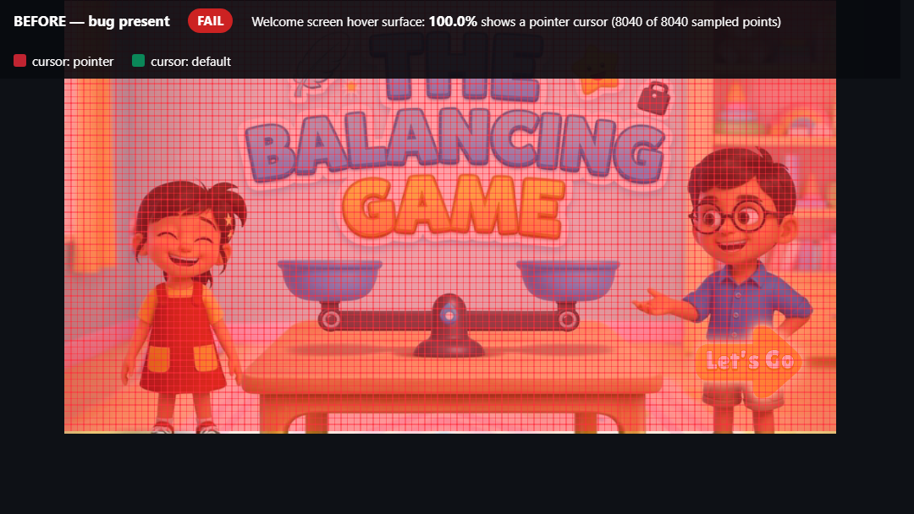
Before. Every one of 8 040 sampled points reports a pointer cursor — the bookshelf, the wall, the children, the table.
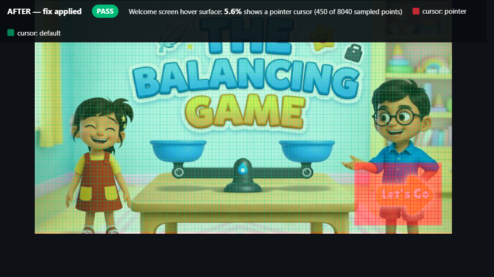
After. Red survives only on Let's Go. The button pulses, so its share reads between 5.5% and 7.5% depending on the frame sampled.
Measured
Share of the welcome screen showing a pointer100.0%→6.7%
Named hit-test points (bookshelf, sky, wall, floor, centre, title, Let's Go)7 / 7 pass
Largest pointer region on any of the 5 screens7.5% (the button)
2
Title voice-over re-plays and overlaps on background tap
Closed
“Clicking anywhere on the static background triggers the title audio to
re-play and overlap itself. Background clicks should not trigger or interrupt playback. The
title voice-over should play once automatically on load.”
What caused it
The same full-screen button as item 1. Its one and only authored action was “play my own
audio”, so every tap on the scenery threw the title line back to word one. That element is
no longer wired, and the line is now started once as the screen loads.
Measured
Triggers from 10 rapid taps on the scenery10→0
Taps that cut into a line already speaking9→0
Times the line starts on load1
Welcome art hit-testingpointer-events: none
Let's Go still stops the line and starts level 1pass
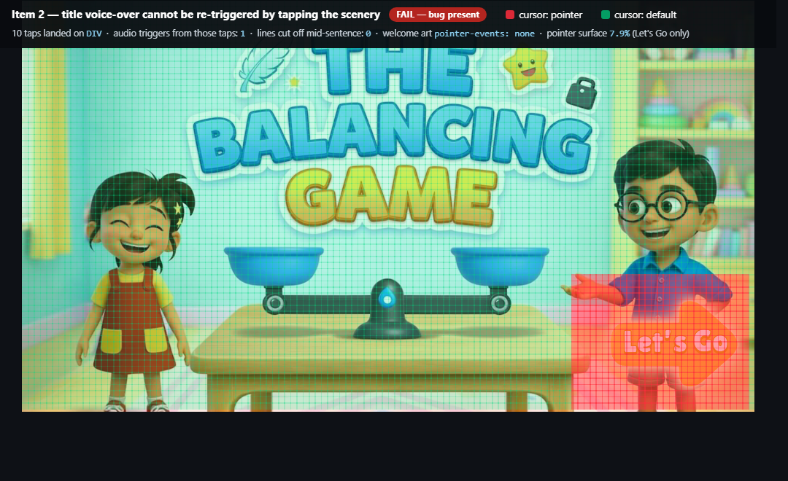
Ten taps, zero audio. Taps landed on the bookshelf, sky, wall, centre, title
and floor. The line was not started or interrupted once.
The two routes, and only those two
The acceptance wording allows the line to play “once automatically upon page load, or when
clicking an intentional audio icon/button if intended”. Both are built; nothing else can
start it.
1 · On load. Requested as the screen appears, and re-requested for
about five seconds in case the host had not granted playback yetautomatic where allowed
2 · The speaker button. Top-left of the welcome art, always available,
no browser configurationon demand
A tap on the scenerysilent, always
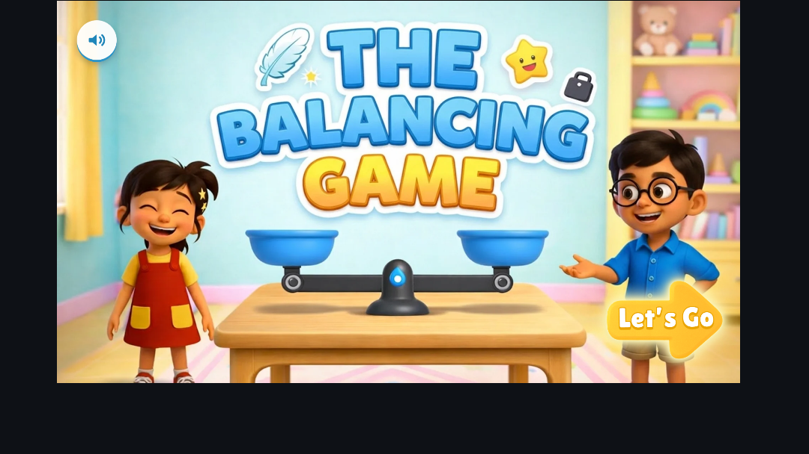
Where it sits. Top-left, clear of the title, both children and Let's Go.
The artwork itself stays inert — the button opts back into taps on its own.
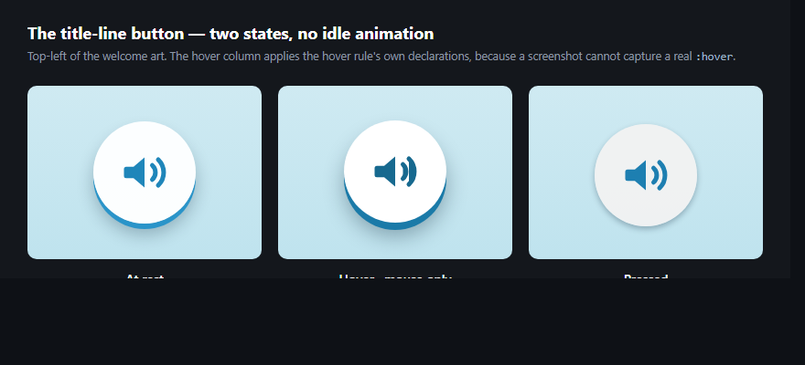
Two states, no idle animation. Hover lifts the cap and deepens the blue;
pressing sinks it onto the bump. Hover is mouse-only so it cannot latch on a tablet.
Two things were wrong here before this build, and
both are worth knowing. A “first tap anywhere starts the line” fallback had been added so
a refused autoplay would still be heard — but a tap on the scenery is not a request for audio,
and it broke this very rule, so it is gone. Removing it was not enough on its own: a tap is
what grants a page permission to make sound, so a retry landing a few hundred milliseconds
later was still allowed and still started the line, which looked identical to the defect.
The first touch anywhere now stops the asking rather than enabling it.
On “automatically”. Whether the on-load request
is granted is the browser's decision, not the page's, and no script can override it. It plays
by itself inside an app web view with
mediaPlaybackRequiresUserGesture false (Android) or
mediaTypesRequiringUserActionForPlayback empty (iOS), in Edge with
edge://settings/content/mediaAutoplay set to Allow, or once a browser has built
up engagement for the site. Everywhere else the speaker button covers it, which is why route
2 exists. A one-page checker ships at /autoplay-check.html so anyone can see
which case they are in.
3 · 7
Pointer stays on option cards after answering — wrong and right
Closed
“After selecting an incorrect answer, hovering the pink book and bag
options still shows a pointer. Only Try again should.”
“After selecting the correct answer, hovering both option cards still shows a pointer.
Only Next should.”
What caused it
Both were the inline-cursor problem from item 1, on a different screen. The cards were
genuinely locked the whole time — clicks were already being refused — but the cursor could
not be taken back off them. Fixing the cursor's owner closed both paths at once.
The cards also now look out of play: both dim, and the one the learner chose stays
bright so their eye lands on their own answer.
Measured — on all four levels
Cursor on the chosen cardpointer→default
Cursor on the other cardpointer→default
Answers submitted by clicking a completed card0
Invariant across all 11 wired controls16 failures→0
Only Next takes the pointer on the success screenpass
Rather than checking screen
by screen, the suite asserts the rule itself on every control the game wires: switched off
must mean the arrow cursor, live must mean the hand. With that holding everywhere, no screen
can leak a pointer onto a locked control.
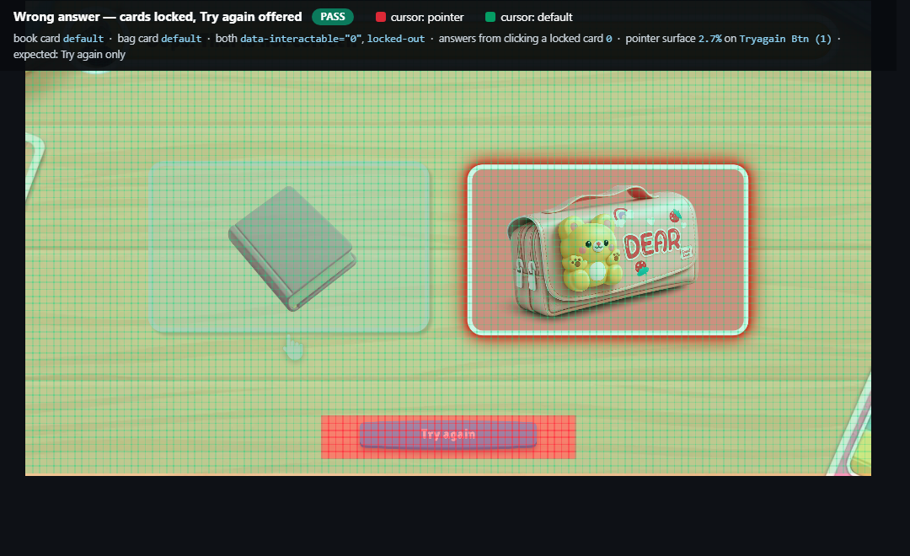
Item 3 — after a wrong answer. Both cards green. Red survives on Try again alone.
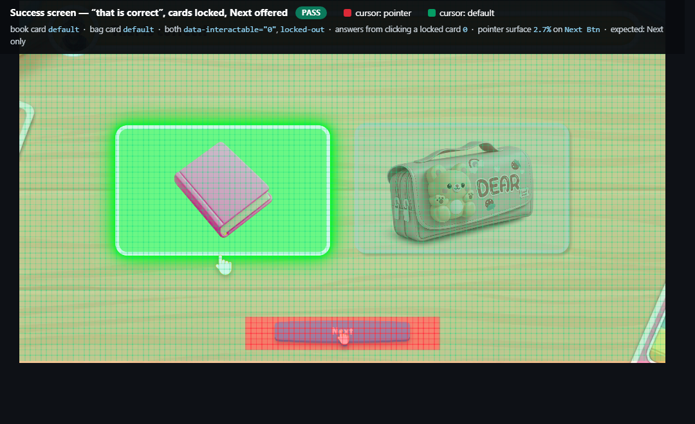
Item 7 — after the correct answer. Both cards green. Red survives on Next alone.
4 · 5 · 8
Buttons: flat, silent, and no response to hover or press
Closed
“The Next button's colour does not change on hover. Interactive primary
buttons should shift shade to afford interactivity. Happens for all buttons.”
“Make Next and Check bumpy and tappable — two states, and a dark tone when tapped. Remove
the shine and the white flash. Add a tap sound across the whole game.”
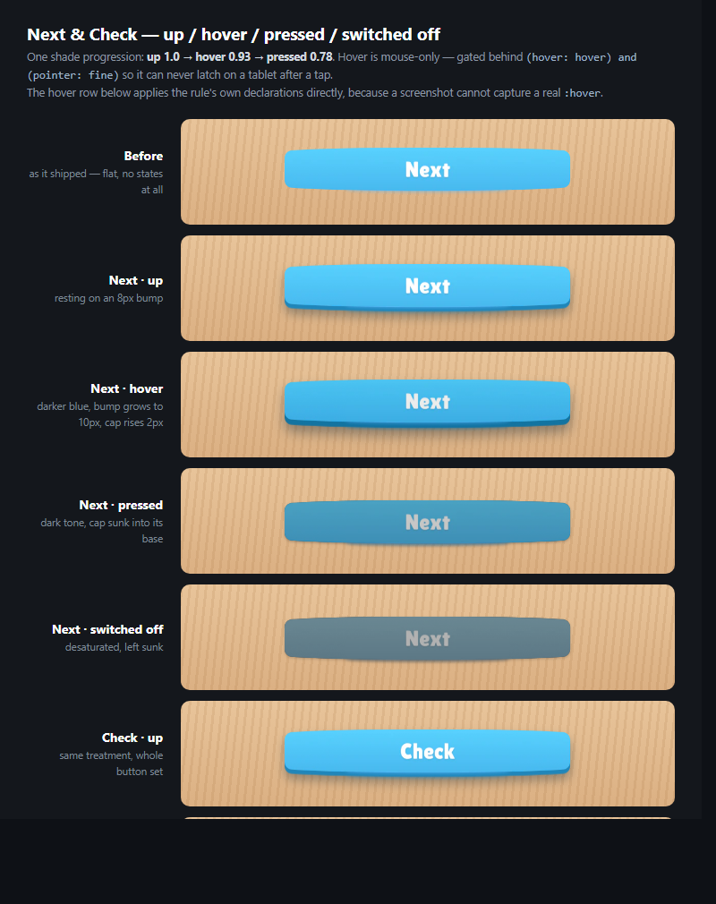
One sprite in every row. No artwork was redrawn — the bump, the shades and
the travel are all styling over the original art, so nothing needs re-exporting.
How it behaves now
Resting8px bump
Hovered (mouse only)darker blue, rises 2px
Pressedtravels 8px down, dark tone
Switched offgrey, sunk
Shine sweep / white flashremoved
Measured
Buttons that play a tap sound, per level9 of 9
Sounds per tap (was double on two buttons)2→1
Sound from a switched-off button0
Press travel0→8px
Hover shade1.00→0.93
Flash elements spawned on tap0
Hover is deliberately mouse-only. On a touch screen the hover state
latches after a tap and would stay lit until something else was touched. It is gated to real
pointing devices, so tablets never see it.
6
Try again appears out of nowhere on the block stage
Closed
“The Try again button looks like it appears suddenly and it does not look
like the learner got it wrong. Add a shake or something, and let the button appear along
with the voice-over.”
What happens now
Pressing Check with the wrong number of blocks used to drop the button on screen in the
same instant, with its audio starting underneath it — so the button read as though it had
always been there and nothing marked the mistake.
The stage now reacts in order: the controls go out of play, the pan of blocks shakes its
head while the blocks turn red, and only then does Try again pop in, arriving with the
words. No new narration was added — this is the stage's own line.
Measured — on all four levels
Controls locked when the answer is wrongimmediately
Try again on screen at 90msyes→no
When Try again arrives0ms→660ms
Pan shakestranslateX 15px
Pan returned to its exact starting positionpass
Clips playedTry_again.ogg only
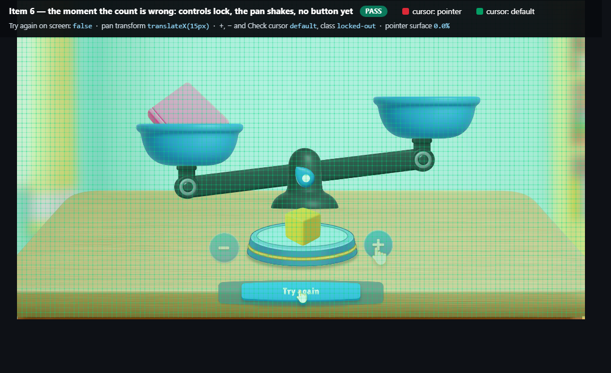
At 170ms. Pan shifted translateX(15px) mid-shake, +, − and Check
already locked and green, and no Try again anywhere — pointer surface 0.0%.
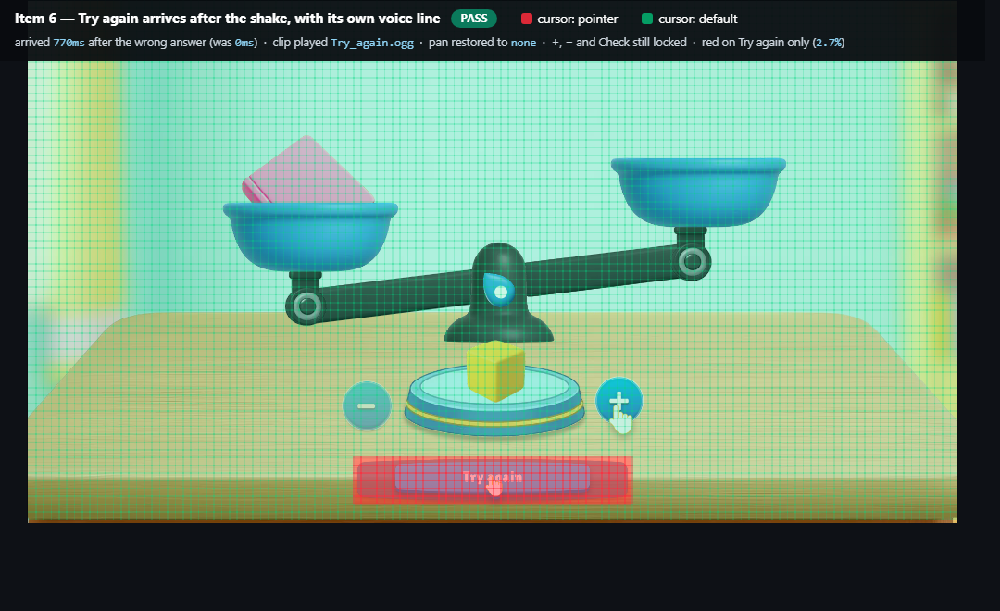
At 770ms. Try again has arrived with its line and is the only red region.
The pan is back on its original transform; the controls are still locked.
9
Tapping a locked card flashes a blue highlight
Closed
“On the post-answer screen, tapping the unselected card triggers a blue
selection outline. The cards are disabled — tapping should produce no visual change at
all.”
What caused it
Not the game. A wired control stays a tap target even while it is switched off, so mobile
browsers painted their own translucent blue rectangle over the card the moment a
finger landed — before any game code ran, and regardless of the check that correctly
refused the tap. That is why the highlight appeared while nothing happened, and why it only
showed on touch devices. The platform highlight is now suppressed across the game.
Measured — on all four levels
Platform tap highlight on the cardstransparent
Visual properties watched across 3 taps15, none changed
Still identical 400ms laterpass
Pressed styling on a locked cardnever applied
A live control still reacts to a presspass
That last line matters: the
browser's overlay is gone without switching off the game's own press feedback.
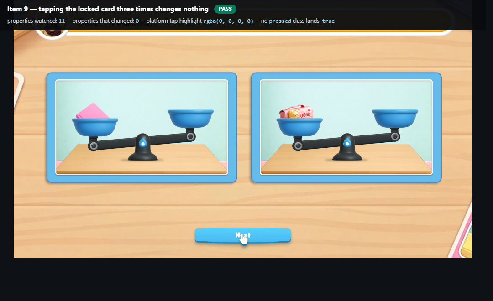
Three taps on the locked card, nothing moved. Every watched property — tap
highlight, outline, border, box-shadow, filter, opacity, background, transform, margin and the
class list — is identical before and after.
10
Nothing nudges the learner toward Next when idle
Visual done · audio needs a clip
“Once the slide audio finishes, the screen goes static. After about five
seconds idle, something should nudge the learner — a pulse or animation on Next, or an
audio reminder.”
What caused it
The game already had the machinery — a timer that drops an animated pointing hand onto a
target — but of the four places that reveal Next, only one armed it, and the
“That is correct!” screen was not one of them.
All four now arm the same escalation: Next pops in and breathes; if it is still untouched
after five seconds the breathing deepens and the hand comes in and points at it. Both stop
the instant it is pressed.
Measured — on all four levels
Reveal sites that nudge1 of 4→4 of 4
Hand appears after4 340ms
Hand is parented to the Next buttonpass
Breathing deepens0.94–1.00 → 0.88–1.06
Both stop when Next is pressedpass
Nudge fires on a button that already leftnever
The audio reminder is not built. There is no
“click Next to continue” clip in the project — the closest is
Tap_on_the_heavier_item.ogg, which belongs to a different stage and would be
wrong here. Rather than repurpose an unrelated line, the visual nudge ships on its own.
Supply a clip and it drops into one place.
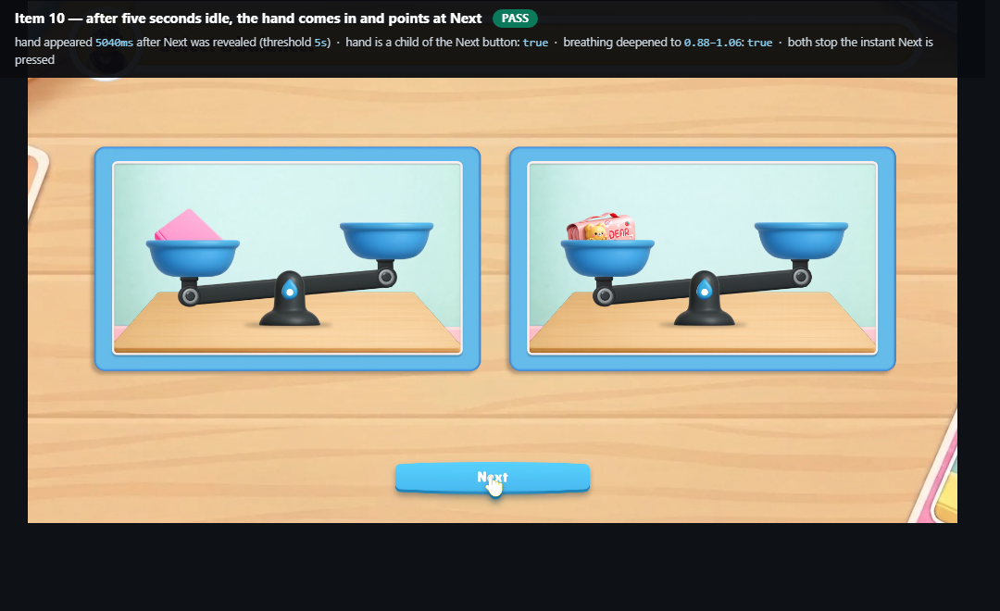
The nudge, five seconds in. The pointing hand has arrived on Next and the
breathing has deepened. Both stop the instant the button is pressed.
Open, and worth a decision
Three things left on the table. None blocks the build.
Idle audio reminder — needs a recording
Item 10's visual nudge is live. The spoken reminder needs a clip that does not exist yet.
One line of wiring once it does.
Title voice-over — resolved, one optional improvement left
The line is guaranteed hearable: the speaker button works in every browser with no
configuration. If you also want it to speak by itself, that is one flag on the host —
the web view's gesture requirement set to false — with no change to the game.
The five-second idle threshold covers Next only
Plus and minus were already at five seconds. Check, Try again, “Select a balance” and the
final tap still use their authored twelve. Those are moments where a learner is reading or
thinking rather than stuck, which is likely why they were set longer — say the word and
they change.
Figures come from ten automated suites run headless over all four levels against the
shipped build. Four checks are recorded as skipped rather than passed: they wait on narration that
cannot finish on a machine with no audio device, and are never counted as passes.